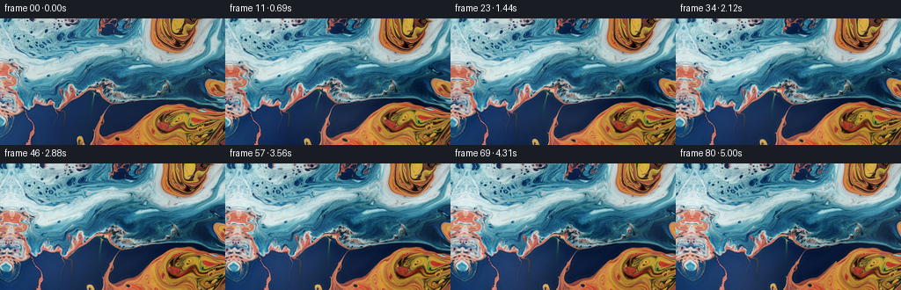
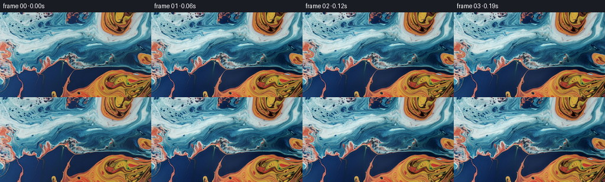
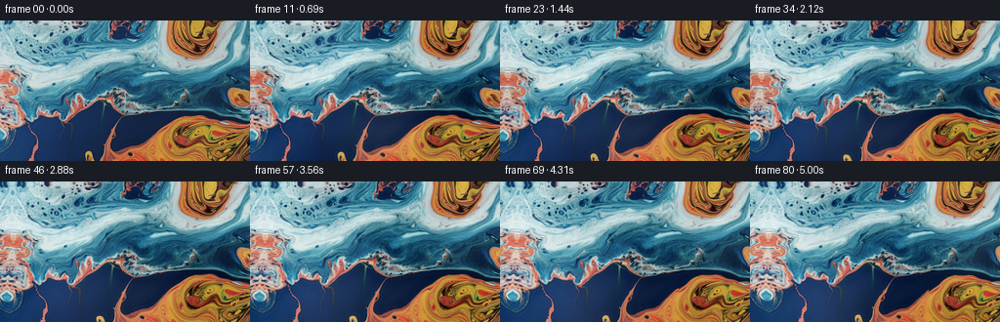

CODING AGENTS AS PIXEL WORLD MODELS
traex/DeepSeek-V4.1-Flash · 0001_s2
点击播放 · 原生 RGB 像素
此结果可播放，但该运行尚未通过最终提交审核。页面展示不代表评测通过。
逐轮保存的候选
回放视频、检查图与代码变化。
每份候选均可单独播放。实际图片检查记录在下方工具轨迹中。
候选 01播放与检查图
点击播放 · 原生 RGB 像素


展开代码变化
--- 上一保存版本
+++ 本次保存版本
@@ -0,0 +1,139 @@
+"""Generate a camera-pan continuation of the supplied liquid-paint frame."""
+
+from pathlib import Path
+
+import numpy as np
+from PIL import Image
+from scipy.ndimage import gaussian_filter, map_coordinates
+
+import artifact_io
+
+
+CASE_DIR = Path(__file__).resolve().parent
+WIDTH = 256
+HEIGHT = 144
+FRAMES = 81
+
+
+def _smoothstep(value):
+ value = np.clip(value, 0.0, 1.0)
+ return value * value * (3.0 - 2.0 * value)
+
+
+def _source_tangents(image):
+ """Return a smoothed tangent field that follows the marbled edges."""
+ luminance = image @ np.array([0.2126, 0.7152, 0.0722])
+ luminance = gaussian_filter(luminance, sigma=1.1)
+ grad_y, grad_x = np.gradient(luminance)
+ scale = np.hypot(grad_x, grad_y)
+ tangent_x = -grad_y / (scale + 0.012)
+ tangent_y = grad_x / (scale + 0.012)
+ tangent_x = gaussian_filter(tangent_x, sigma=7.0)
+ tangent_y = gaussian_filter(tangent_y, sigma=7.0)
+ magnitude = np.hypot(tangent_x, tangent_y) + 1e-6
+ return tangent_x / magnitude, tangent_y / magnitude
+
+
+def _flow_coordinates(time, tangent_x, tangent_y):
+ """Build backward-sampling coordinates for one frame."""
+ yy, xx = np.mgrid[0:HEIGHT, 0:WIDTH].astype(np.float32)
+ u = xx / WIDTH
+ v = yy / HEIGHT
+
+ # A leftward camera move reveals the paint on the left and makes the
+ # visible texture travel right across the frame.
+ camera_x = 19.0 * time
+ camera_y = 0.55 * np.sin(np.pi * time)
+
+ # Two scales of slow, spatially smooth liquid motion. The amplitudes
+ # ramp in from zero so the opening remains exactly the supplied frame.
+ ramp = _smoothstep(time / 0.16)
+ a1 = 2.6 * ramp
+ a2 = 1.35 * ramp
+ phase = 2.0 * np.pi * time
+
+ curl_x = (
+ 0.72 * np.cos(6.3 * v + 3.1 * u + 0.35 * phase)
+ + 0.42 * np.sin(11.0 * v - 2.0 * u - 0.22 * phase)
+ + 0.22 * np.cos(17.0 * u + 8.0 * v + 0.12 * phase)
+ )
+ curl_y = (
+ 0.66 * np.sin(5.1 * u - 2.6 * v - 0.30 * phase)
+ + 0.38 * np.cos(10.0 * u + 6.0 * v + 0.20 * phase)
+ + 0.20 * np.sin(15.0 * v - 4.0 * u - 0.10 * phase)
+ )
+
+ tangent_wave = np.sin(0.020 * xx + 0.055 * yy + 0.26 * phase)
+ tangent_x = tangent_x * tangent_wave
+ tangent_y = tangent_y * tangent_wave
+
+ sample_x = xx - camera_x + a1 * curl_x + a2 * tangent_x
+ sample_y = yy - camera_y + a1 * curl_y + a2 * tangent_y
+ return sample_x, sample_y
+
+
+def _render_frame(image, time, tangent_x, tangent_y):
+ sample_x, sample_y = _flow_coordinates(time, tangent_x, tangent_y)
+ channels = [
+ map_coordinates(image[..., channel], [sample_y, sample_x], order=3, mode="reflect")
+ for channel in range(3)
+ ]
+ warped = np.stack(channels, axis=-1)
+
+ # A restrained tangential blend softens the liquid's internal shear while
+ # leaving the crisp pigment filaments intact.
+ phase = 2.0 * np.pi * time
+ side_x = sample_x + 0.85 * np.sin(0.031 * sample_x + 0.017 * sample_y + 0.20 * phase)
+ side_y = sample_y + 0.65 * np.cos(0.024 * sample_x - 0.043 * sample_y - 0.17 * phase)
+ side = np.stack(
+ [
+ map_coordinates(image[..., channel], [side_y, side_x], order=3, mode="reflect")
+ for channel in range(3)
+ ],
+ axis=-1,
+ )
+ warp_amount = 0.045 + 0.025 * _smoothstep(time)
+ warped = warped * (1.0 - warp_amount) + side * warp_amount
+
+ # Preserve the photographic micro-detail after interpolation, then add a
+ # very subtle moving sheen as though light is grazing the wet surface.
+ soft = np.stack([gaussian_filter(warped[..., c], sigma=0.85) for c in range(3)], axis=-1)
+ warped += 0.10 * (warped - soft)
+ luminance = warped @ np.array([0.2126, 0.7152, 0.0722])
+ highlight = gaussian_filter(luminance, sigma=3.2) - gaussian_filter(luminance, sigma=9.0)
+ sheen = (
+ 0.030 * np.sin(0.028 * sample_x - 0.021 * sample_y + 0.42 * phase)
+ + 0.014 * np.cos(0.061 * sample_x + 0.037 * sample_y - 0.31 * phase)
+ )
+ warped += (0.30 * highlight + sheen)[..., None]
+
+ return np.clip(warped * 255.0 + 0.5, 0, 255).astype(np.uint8)
+
+
+def generate():
+ first = np.asarray(Image.open(CASE_DIR / "first_frame.png").convert("RGB"))
+ if first.shape != (HEIGHT, WIDTH, 3):
+ raise ValueError(f"unexpected first-frame shape: {first.shape}")
+ image = first.astype(np.float32) / 255.0
+ tangent_x, tangent_y = _source_tangents(image)
+
+ frames = np.empty((FRAMES, HEIGHT, WIDTH, 3), dtype=np.uint8)
+ frames[0] = first
+ for index in range(1, FRAMES):
+ frames[index] = _render_frame(
+ image,
+ index / (FRAMES - 1),
+ tangent_x,
+ tangent_y,
+ )
+ return frames
+
+
+def main():
+ frames = generate()
+ artifact_io.save(frames, CASE_DIR)
+ print(f"saved {len(frames)} frames to {CASE_DIR}")
+
+
+if __name__ == "__main__":
+ main()
候选 02播放与检查图
点击播放 · 原生 RGB 像素

展开代码变化
--- 上一保存版本
+++ 本次保存版本
@@ -47,7 +47,7 @@
# Two scales of slow, spatially smooth liquid motion. The amplitudes
# ramp in from zero so the opening remains exactly the supplied frame.
- ramp = _smoothstep(time / 0.16)
+ ramp = _smoothstep(time / 0.42)
a1 = 2.6 * ramp
a2 = 1.35 * ramp
phase = 2.0 * np.pi * time
候选 03播放与检查图

可观测工具轨迹
实际执行的命令与返回图片。
命令 1exit 0
/bin/bash -c "pwd && rg --files -g 'prompt.txt' -g 'GENERATION_RULES.md' -g '"'!**/.git/**'"' -g '"'!**/.tmp/**'"' | sort"
命令 2exit 0
/bin/bash -c "ls -la && find . -maxdepth 2 -type f -not -path './.git/*' -not -path './.tmp/*' -printf '%p %s bytes\\n' | sort"
命令 3exit 0
/bin/bash -c 'git status --short --branch 2>/dev/null || true'
命令 4exit 0
/bin/bash -c 'cat GENERATION_RULES.md'
命令 5exit 0
/bin/bash -c "cat prompt.txt && printf '\\n--- task_spec.json ---\\n' && cat task_spec.json"
命令 6exit 0
/bin/bash -c "sed -n '1,240p' artifact_io.py"
命令 7exit 0
/bin/bash -c "find /mnt/bn/embodied-lf3/masiyuan/PixelWorld/runs/bench_codex_20261109/generations/vbench_i2v/deepseek-v41/vision-agent/case_0001_s2_attempt_02 -maxdepth 3 -type f -printf '%p %s\\n' | sort"
命令 8exit 0
/bin/bash -c "python - <<'PY'
from PIL import Image
import numpy as np
im=np.array(Image.open('first_frame.png').convert('RGB'))
print('shape', im.shape, 'dtype', im.dtype)
print('min/max/mean/std', im.min(), im.max(), im.mean(axis=(0,1)), im.std(axis=(0,1)))
for y in (0, 20, 40, 60, 72, 90, 110, 130, 143):
row=im[y]
print(y, row[0].tolist(), row[128].tolist(), row[255].tolist())
PY"命令 9exit 0
/bin/bash -c "sed -n '1,220p' player_template.html"
命令 10exit 0
/bin/bash -c "command -v ffmpeg || true; command -v ffprobe || true; python - <<'PY' import importlib for m in ['numpy','PIL','scipy','cv2','imageio']: try: mod=importlib.import_module(m); print(m, getattr(mod,'__version__','ok')) except Exception as e: print(m, 'missing', e) PY"
命令 11exit 0
/bin/bash -c 'python generate.py'
命令 12exit 0
/bin/bash -c "python - <<'PY'
from PIL import Image
import numpy as np
from pathlib import Path
f=np.stack([np.array(Image.open(p)) for p in sorted(Path('frames').glob('*.png'))])
print('frames', f.shape, f.dtype)
print('first exact', np.array_equal(f[0], np.array(Image.open('first_frame.png').convert('RGB'))))
d=np.abs(f[1:].astype(np.int16)-f[:-1].astype(np.int16))
print('consecutive mean/max/p99', d.mean(), d.max(), np.percentile(d,99))
for i in [0,1,2,10,20,40,60,80]:
print(i, 'mean', f[i].mean(axis=(0,1)).round(2), 'std', f[i].std(axis=(0,1)).round(2))
PY"命令 13exit 0
/bin/bash -c "python - <<'PY'
from PIL import Image
import numpy as np
from pathlib import Path
# inspect max per-frame displacement proxy by phase correlation unavailable; report spatial extrema and frame files
fs=sorted(Path('frames').glob('*.png'))
print('frame files', len(fs), fs[0].name, fs[-1].name)
a=np.stack([np.asarray(Image.open(p)) for p in fs])
for i in [0,1,4,8,16,24,40,56,72,80]:
im=a[i].astype(float)
gx=np.abs(np.diff(im,axis=1)).mean(); gy=np.abs(np.diff(im,axis=0)).mean()
print(i, 'xgrad',round(gx,2),'ygrad',round(gy,2),'dark frac',round((im.mean(2)<40).mean(),3))
PY"命令 14exit 0
/bin/bash -c "python - <<'PY'
from PIL import Image
import numpy as np
from pathlib import Path
im=np.asarray(Image.open('first_frame.png').convert('RGB')).astype(np.int16)
for i in [0,1,2,4,8]:
f=np.asarray(Image.open(f'frames/{i:02d}.png')).astype(np.int16)
d=np.abs(f-im).mean(2)
print(i, 'mean abs', d.mean().round(3), 'p95',np.percentile(d,95).round(2), 'changed >15', (d>15).mean().round(4))
PY"命令 15exit 0
/bin/bash -c "python generate.py && python - <<'PY'
from PIL import Image
import numpy as np
from pathlib import Path
fs=sorted(Path('frames').glob('*.png'))
a=np.stack([np.asarray(Image.open(p)) for p in fs])
d=np.abs(a[1:].astype(np.int16)-a[:-1].astype(np.int16))
print('shape:',a.shape,'first_exact:',np.array_equal(a[0],np.asarray(Image.open('first_frame.png').convert('RGB'))))
print('consecutive mean:',d.mean().round(3),'p99:',np.percentile(d,99).round(2),'max:',d.max())
print('per-step mean:',np.round(d.mean(axis=(1,2,3))[:12],2).tolist(), '...', np.round(d.mean(axis=(1,2,3))[-5:],2).tolist())
print('mean RGB start/end:',a[0].mean((0,1)).round(2),a[-1].mean((0,1)).round(2))
PY"命令 16exit 0
/bin/bash -c 'ffmpeg -version | head -n 1 || true'
命令 17exit 0
/bin/bash -c "ls -lh pixels.npz index.html inspection.png transition_check.png frames/00.png frames/80.png && du -sh frames && python - <<'PY'
import json
from pathlib import Path
p=json.loads(Path('task_spec.json').read_text())
print('spec',p)
print('npz exists',Path('pixels.npz').is_file())
PY"命令 18exit 0
/bin/bash -c "python - <<'PY'
import numpy as np
z=np.load('pixels.npz')['pixels']
print(z.shape,z.dtype,z.min(),z.max())
print('packed check:', z[0,0,0], 'expected', (167<<16)|(201<<8)|207)
PY"命令 19exit 0
/bin/bash -c "python - <<'PY'
import re,base64,numpy as np,json
from pathlib import Path
html=Path('index.html').read_text()
assert 'window.__pixelReady' in html
m=re.search(r\"const DATA=(\\{.*?\\}),W=DATA.width\",html)
assert m, 'payload not found'
d=json.loads(m.group(1))
print({k:(len(v) if k=='deltas' else v) for k,v in d.items() if k not in ('first',)})
raw=base64.b64decode(d['first'])
first=np.frombuffer(raw,dtype='<u4').reshape(144,256)
z=np.load('pixels.npz')['pixels'][:,:,0]
print('player first payload matches npz:',np.array_equal(first,z))
print('frame count:',len(d['deltas'])+1,'fps:',d['fps'])
PY"命令 20exit 0
/bin/bash -c 'sha256sum pixels.npz frames/00.png frames/80.png index.html > .tmp/before.sha256 && python generate.py && sha256sum pixels.npz frames/00.png frames/80.png index.html > .tmp/after.sha256 && diff -u .tmp/before.sha256 .tmp/after.sha256 && cat .tmp/after.sha256'
视觉工具实际返回图片 1

视觉工具实际返回图片 2

视觉工具实际返回图片 3

视觉工具实际返回图片 4

保存候选 3 份；完成命令 20 次；可验证图片返回 4 张。原始 API 响应与完整日志保留在本地。